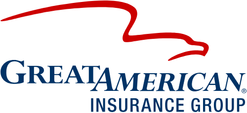
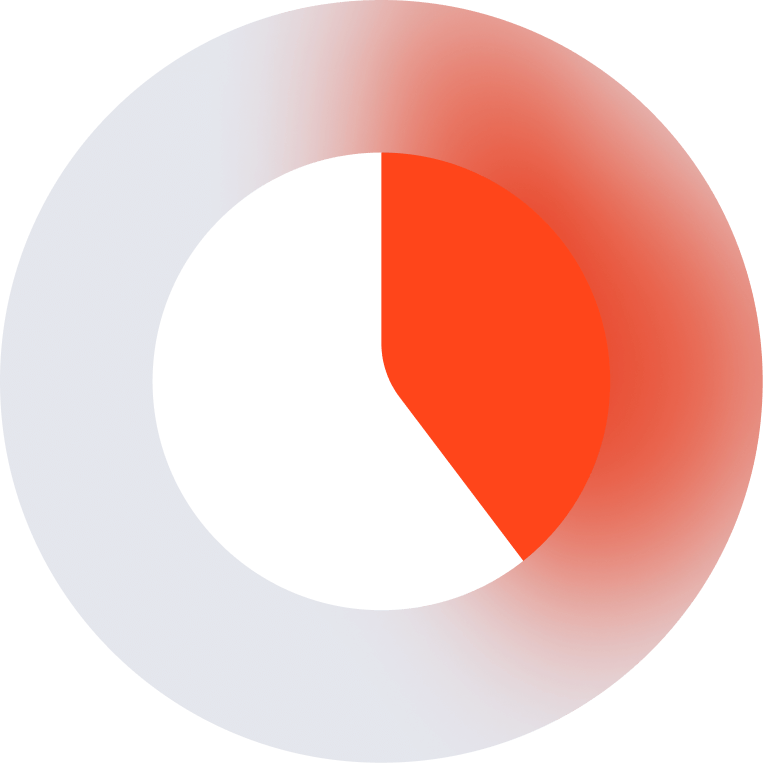

A caller already validated by the IVR (Tax ID + Bill ID) asks "has my payment gone out?" and gets a specific, dated answer — no hold, no transfer.
A provider isn't sure a bill or its supporting records arrived — the AVA names exactly what's on file, what's outstanding, and offers to trigger a reminder.
A caller whose bill was denied hears the specific reason and appeal deadline in plain language, then hands off to Appeals with the denial code already on screen.
get_bill_payment_status and reads back the status — e.g. "processed on 9/18, payment issued 9/20 for $412.50."get_documentation_status to check what's on file for the bill or claim.get_denial_reason and explains the denial code in plain language, plus the appeal steps and deadline from Appeals Knowledge.get_appeal_status and reads back where it stands.